Timelion recepies¶
Put 2 graphs on 1 chart¶
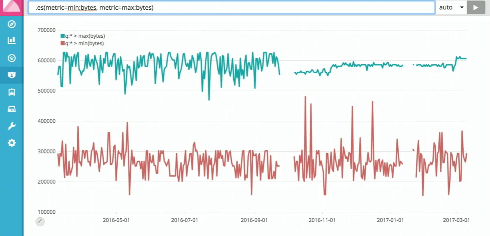
Supply queries multiple times¶
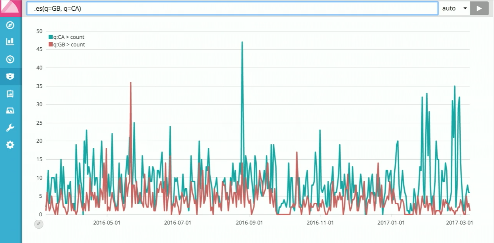
Leverage ES terms aggregation to avoid explicit values typing¶
Here we select top 5 countries using ES terms aggregation
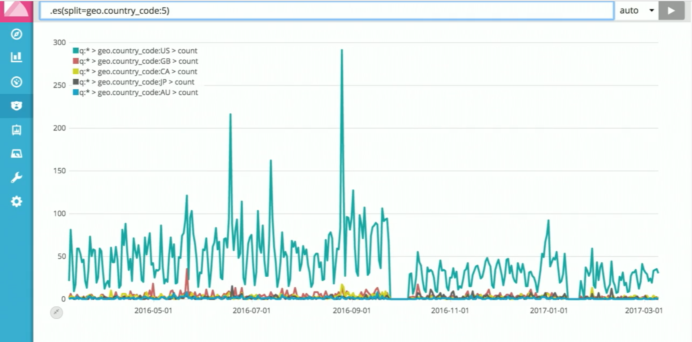
Compare 2 charts side-by-side¶
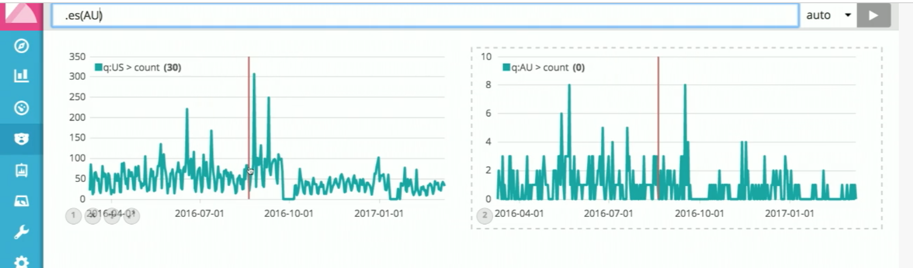
Having multiple queries on the same chart¶
We combine here several graphs, each having it’s own y-axis, and also label defined for axis #4,
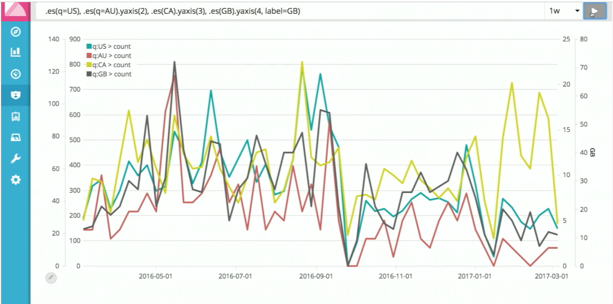
Using range() function to align values scale¶
What if we just need to compare shapes, and we don’t have explicit names for the countries? Use range() function and terms aggregation using split()
.es(split=geo.country_code:5).range(0,100)
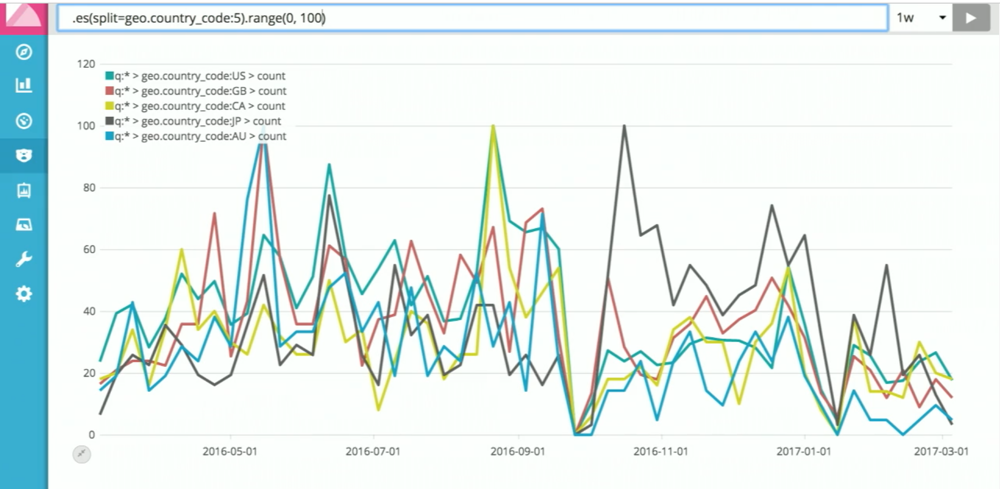
Using formulas and computations to calculate percentage¶
Requirement: Show how much percents of total traffic volume make top 5 countries
Solution:
We will need to implement formula:
"top 5 percents" = "traffic from top 5 countries" / "total traffic volume" * 100
This is how it will look in timelion language
.es(split=geo.country_code:5).add().label("top 5").divide(.es()).multiple(100)
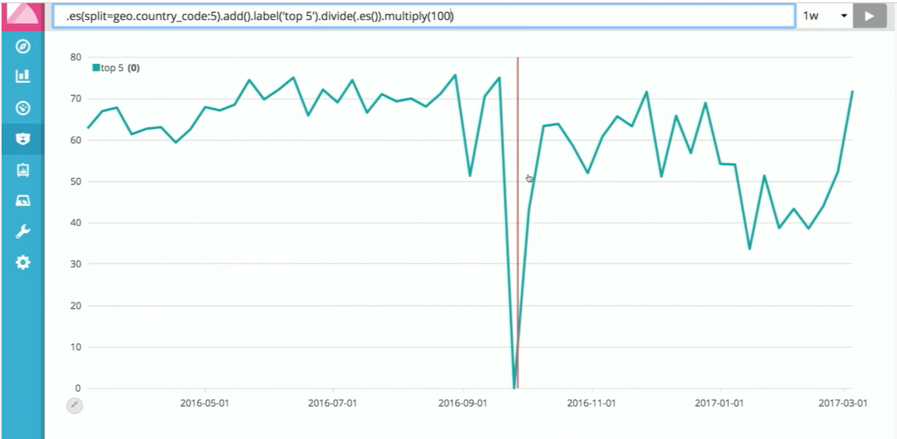
Derivative functions (how data is changing)¶
Shows speed of change in data
.es().derivative()
Acceleration
.es().derivative().derivative()
Using offsets to compare series from different periods side by side¶
Requirement: show how traffic from today compares to traffic from past week
Solution: use offset argument of datasource query.
.es(), .es(offset=-1w)
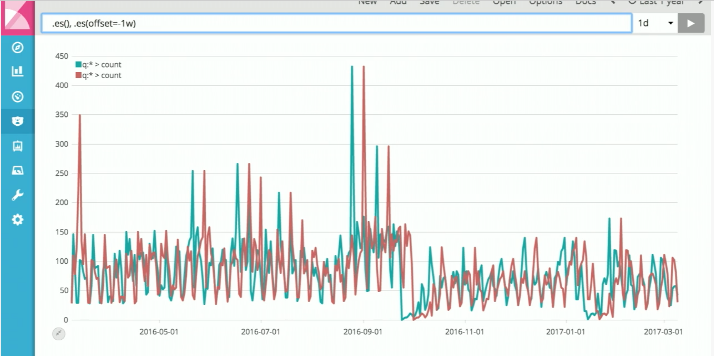
And using subtract we can show difference between corresponding times
.es().subtract(.es(offset=-1w))
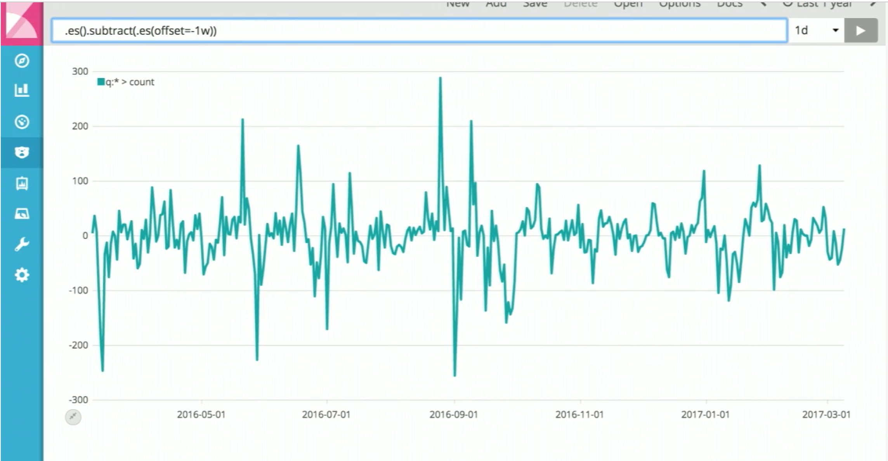
Filling blanks¶
fit()¶
Requirement: series have a gap in the timeline, where we don’t have data. Need to fill this gap
Solution: use fit function. This function takes an argument, which determine how exactly to connect the line.
.es(metric=avg:bytes).fit(average)
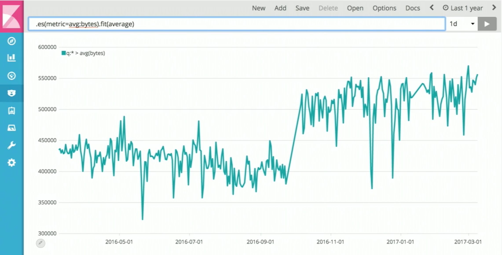
Various styling¶
.es(-US, split=geo.country_code:50)
.legend(false)
.lines(stack=true, fill=10)
.color(red:green:yellow:black)
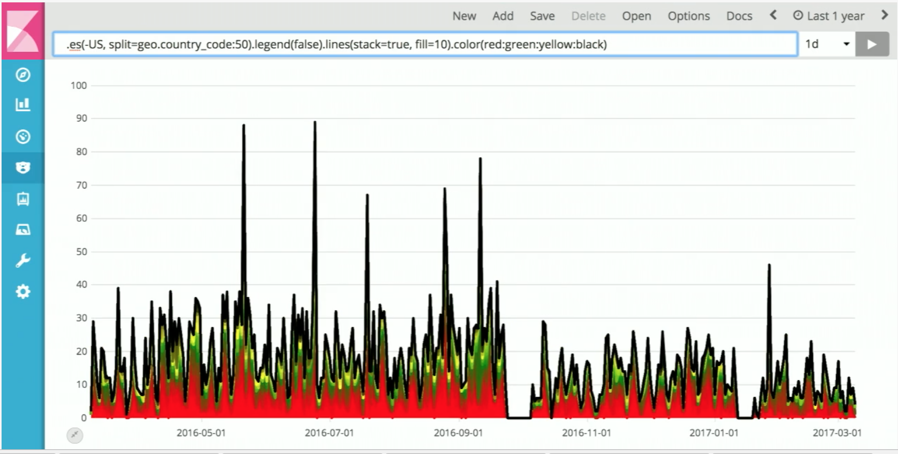